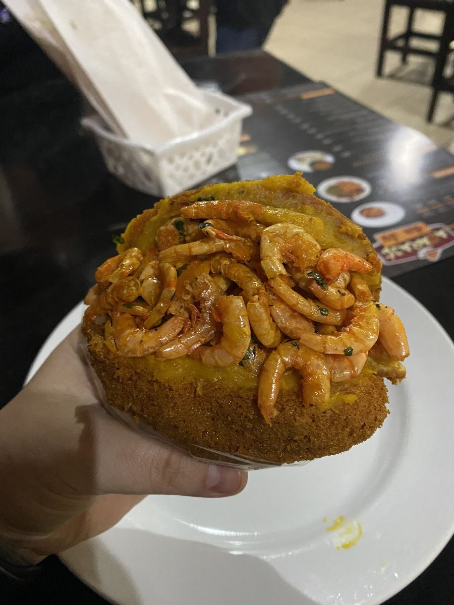
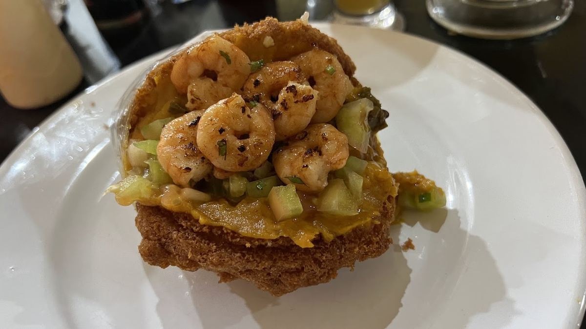
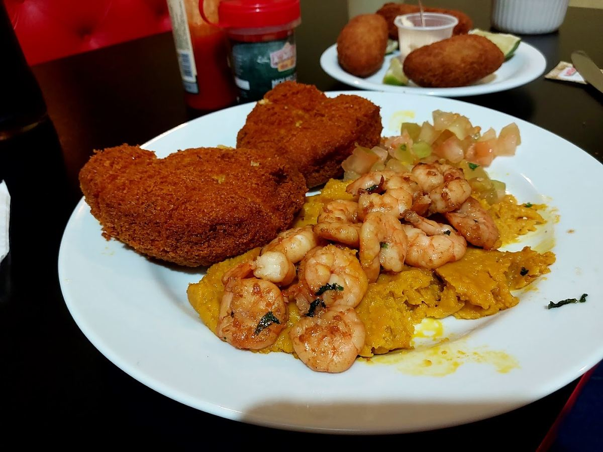
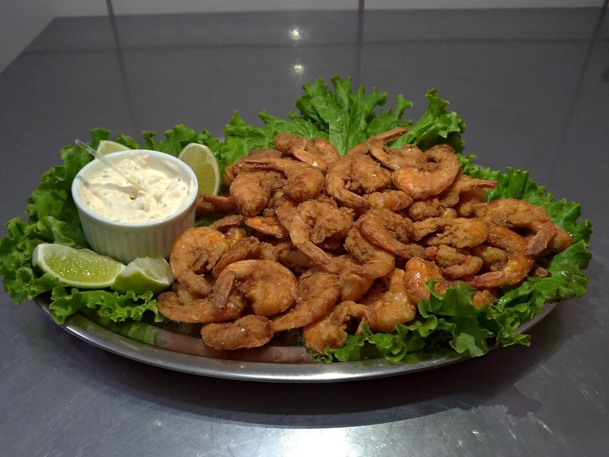
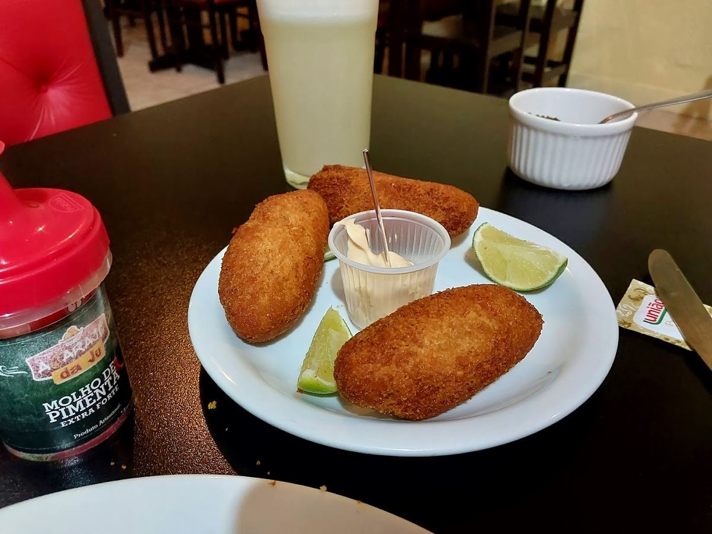
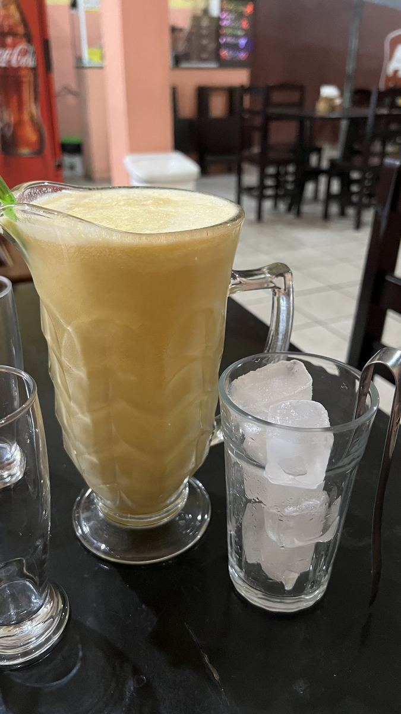
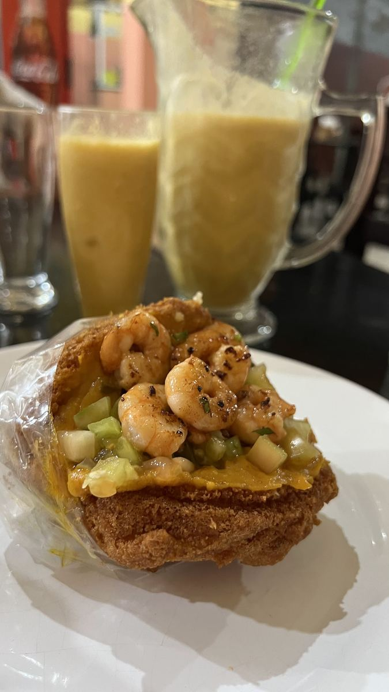
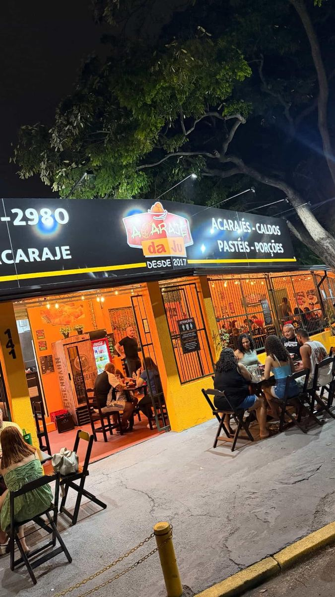

Acarajé na mão
Para comer quente, do jeito da baiana de rua.
Massa leve e sequinha por fora, recheio caprichado e camarão por cima. Tem caldo de quenga, pastel de camarão com catupiry, porção de camarão e suco de cajá. De quinta a sábado, à noite, no Parque Universitário de Viracopos.

Os mais pedidos da casa. Para saber o que tem hoje e os valores, chame no WhatsApp.

Para comer quente, do jeito da baiana de rua.

Aberto no prato, com camarão e recheio, para comer de garfo.

Inteira, para a mesa dividir com cerveja gelada.

Bolinhos e porções para acompanhar.

O par perfeito do acarajé, segundo quem provou.
O caldo baiano de galinha. "Caldo" é a palavra que mais aparece nas avaliações do Google.
Recheados do começo ao fim. E de sobremesa, banana real com canela e açúcar.
Atenção: a cozinha trabalha com camarão. Quem tem alergia, avise na hora do pedido.

Nunca imaginei encontrar um acarajé tão gostoso em Campinas! E acompanhado de suco de cajá. Parecia que estava na Bahia.Dennis · Google
Foi o melhor pastel de camarão que já comi na vida. Recheado do início ao fim, camarão inteiro e catupiry original.Mariana · Google
Local agradável, com boa comida baiana e cerveja bem gelada num preço justo.Avaliação no Google

R. Anajé, 141 · Adega 180 Graus, loja 2 · Campinas (SP)
Pedidos e WhatsApp (19) 98118-2980 · @dajuacaraje
Estacionamento grátis · acesso para cadeirantes · cadeirão para crianças · cartão e aproximação